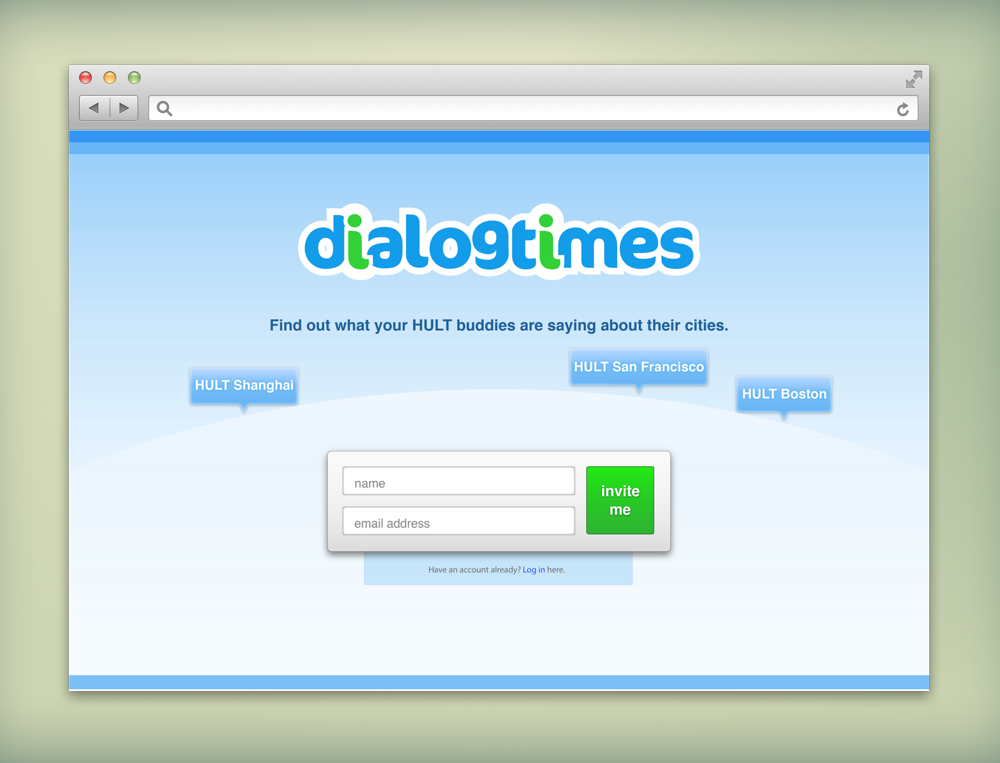
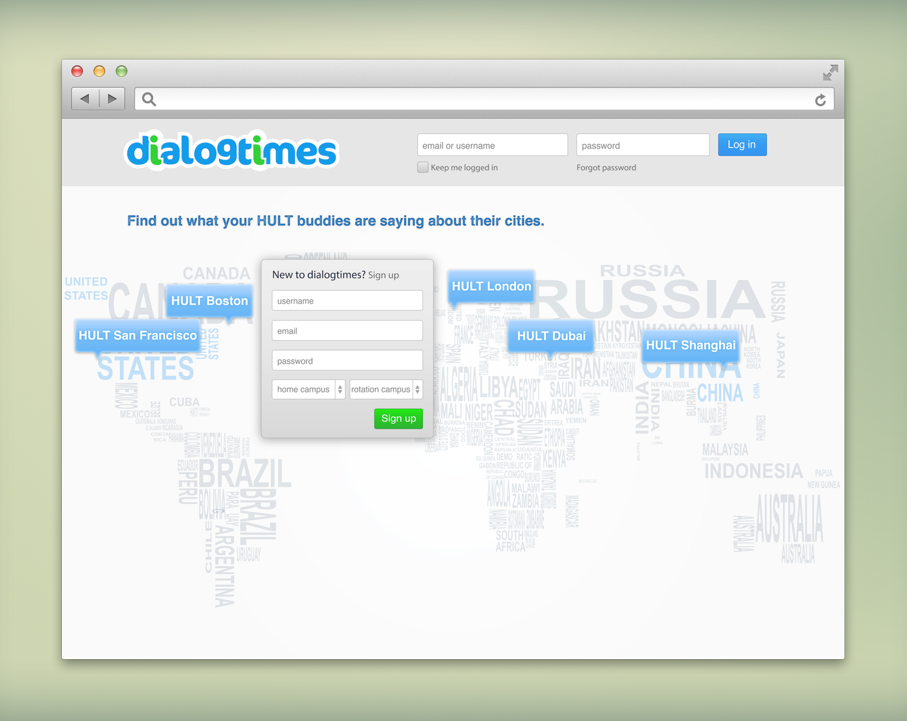
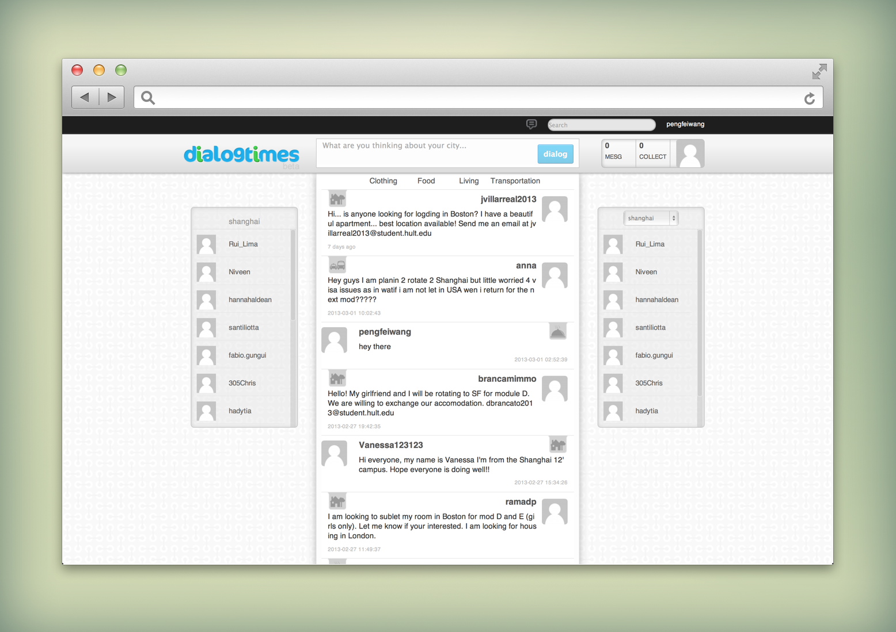

Dialogtimes
web user experience designPhotoshop, Illustrator, HTML5, CSS3
This is a winter part-time project in 2012. Dialogtimes is an educational social media platform for American and Chinese students. I was the only designer, taking all the visual design, interface design and interaction design.
The beta version was used for students from different campuses of HULT School of Business. Therefore, HULT was emphasized quite often for this version.



